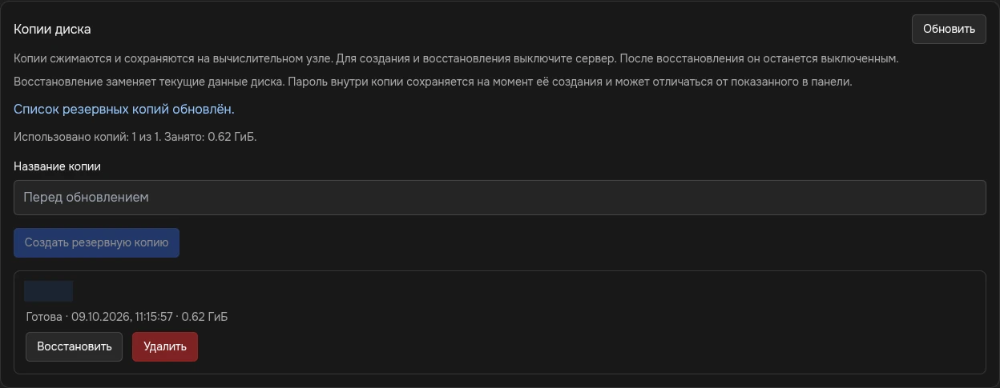
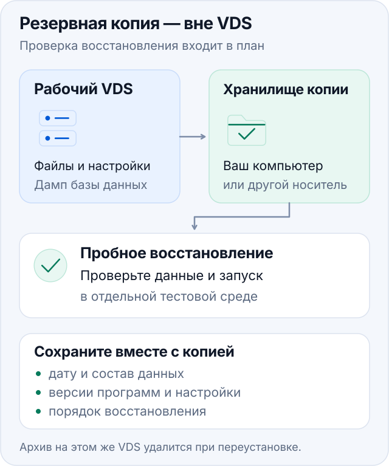

На вкладке «Резервные копии» HakuStack можно сохранить диск VDS, скачать готовую копию на компьютер и восстановить диск из копии в панели. Копии сжимаются и хранятся на вычислительном узле. Для создания и восстановления сервер должен быть выключен, поэтому заранее запланируйте перерыв в работе приложений. Для скачивания готовой копии выключать VDS не требуется.
В блоке «Копии диска» показаны использованное количество, лимит и занятое копиями место. Ориентируйтесь на значения своей услуги. Участнику отдельно назначаются права просмотра, скачивания, создания, удаления и восстановления копий; наличие вкладки ещё не означает доступ ко всем действиям.


Создать копию перед изменениями
- Завершите запись данных приложениями и штатно выключите VDS. Убедитесь, что в «Обзоре» состояние питания — «Выкл».
- Откройте «Резервные копии». Если список уже открыт, нажмите «Обновить».
- При желании заполните «Название копии», например
Перед обновлением сайта. - Нажмите «Создать резервную копию» один раз.
- Дождитесь состояния «Готова». «Создаётся» и сообщение «Операция принята» означают, что работа ещё идёт.
- Вернитесь в «Обзор» и запустите VDS, когда копирование закончится. Проверьте запуск приложений.
Во время операции с диском дождитесь её завершения, прежде чем запускать другие действия. Если достигнут лимит, сначала решите, какую старую копию можно удалить. Удаление единственной рабочей копии ради новой оставит вас без неё, если следующее создание завершится ошибкой.
Скачать готовую копию
- Откройте «Резервные копии» и найдите нужную копию по названию и дате.
- Убедитесь, что её состояние — «Готова», и проверьте свободное место на своём компьютере.
- Нажмите «Скачать» у этой копии.
- Дождитесь завершения передачи в менеджере загрузок браузера. Файл сохраняется как архив
.tar.gz; его имя содержит идентификаторы сервера и копии. - Проверьте, что загрузка завершилась без ошибки. Частично скачанный файл не считайте рабочей резервной копией.
Для этой кнопки нужно отдельное право «Скачивание бэкапов». Одного «Просмотра бэкапов» недостаточно; право скачивания автоматически включает просмотр. На замороженной услуге скачивание недоступно.
Архив содержит данные всего сохранённого диска
В нём могут находиться пароли, SSH-ключи, базы данных и личные файлы. Выдавайте право скачивания только доверенным участникам и храните архив с ограниченным доступом. Это право позволяет получить содержимое копии даже без отдельных прав на просмотр файлов и пароля в панели.
Скачивание требует действующего входа в HakuStack. Если сессия завершилась или доступ отозван, передача может прерваться. Войдите заново, проверьте доступ к услуге и начинайте загрузку через кнопку у нужной копии. Сохранённая ссылка сама по себе не выдаёт права на архив.
Если панель сообщает, что копия сейчас недоступна, дождитесь завершения другой операции и обновите список. При ошибке «Запрошенная часть файла недоступна» начните скачивание заново. Если архив не удаётся проверить или ошибка повторяется, обратитесь в поддержку с названием копии, временем и текстом сообщения.
Кнопка «Восстановить» использует копию, находящуюся в списке панели. Загрузка скачанного архива обратно во вкладку пока не предусмотрена: перед удалением последней панельной копии учитывайте, как будете восстанавливать внешний архив.
Восстановить диск
Текущие данные будут заменены
Восстановление возвращает содержимое диска к состоянию выбранной копии. Файлы и изменения, появившиеся позднее, будут потеряны. Сначала сохраните нужную текущую версию отдельно.
- Проверьте имя сервера, название и дату нужной копии. Для восстановления подходит состояние «Готова».
- Штатно выключите VDS и дождитесь «Выкл».
- На вкладке «Резервные копии» нажмите «Восстановить» у выбранной копии.
- Подтвердите замену текущих данных диска и дождитесь завершения состояния «Восстанавливается».
- После успешного восстановления сервер остаётся выключенным. Запустите его на вкладке «Обзор».
- Проверьте вход в ОС, данные приложения и работу основных функций.
Вместе с диском возвращаются настройки и пароли, которые были в системе на момент создания копии. Поэтому пароль root после восстановления может отличаться от «Пароля по умолчанию», показанного в панели. Используйте данные или SSH-ключ, действовавшие в сохранённой системе.
Удалить ненужную копию
У выбранной копии нажмите «Удалить» и подтвердите действие. Проверьте название и дату: удаление необратимо. Дождитесь завершения состояния «Удаляется», затем проверьте список и счётчик занятого места.
На замороженной услуге доступен просмотр списка; скачивание и изменение копий недоступны. При отсутствии кнопки проверьте свои права у владельца.
Если операция не завершилась
После сетевой ошибки сначала нажмите «Обновить» и проверьте фактическое состояние. Запрос мог быть принят, даже если браузер не получил ответ; не повторяйте его вслепую.
| Сообщение или состояние | Что сделать |
|---|---|
| Сервер должен быть выключен | Штатно остановите VDS и проверьте питание |
| Выполняется другая операция | Дождитесь её завершения и обновите список |
| Лимит копий исчерпан | Проверьте, какие копии можно безопасно удалить |
| Недостаточно места на вычислительном узле | Обратитесь в поддержку; свободное место внутри VDS не решает эту ошибку |
| «Ошибка», файл копии недоступен или восстановление требует проверки | Сохраните текст ошибки и обратитесь в поддержку |
Если панель сообщает, что восстановление требует проверки и сервер оставлен выключенным, согласуйте дальнейшие действия с поддержкой. Передайте номер услуги, название копии, время операции и сообщение панели.
Дополнительная копия вне VDS
Скачайте готовый архив диска на свой компьютер или отдельное хранилище, чтобы иметь копию вне вычислительного узла. Для важных приложений дополнительно полезны собственные экспорты и дампы: их удобнее восстанавливать по отдельности. Настройки расписания в этой вкладке нет; регулярное резервирование организуйте средствами ОС и приложений.

Дополнительная внешняя копия: отдельное хранилище, сведения о содержимом и проверка восстановления.Сохраните данные приложения, конфигурации, список версий программ и дампы баз данных. Для работающей базы используйте штатное резервирование СУБД: простая копия её каталога не всегда пригодна для восстановления. Ключи и секреты храните в защищённой копии с ограниченным доступом.
Передайте результат через SFTP или скачайте отдельный файл через файловый менеджер. Проверьте завершение передачи и чтение архива, запишите дату и состав. Архив, оставленный только внутри VDS, исчезнет вместе с его данными при переустановке.
Для регулярного резервирования выберите периодичность по допустимой потере новых данных и сохраняйте несколько версий. Периодически проверяйте восстановление в отдельной тестовой среде: совместимость программ, права файлов, запуск приложения и чтение данных.